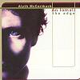

Celtic Lyrics Corner > Artists & Groups > Alyth McCormack > An Iomall > Mo Thruaigh
|  | Mo Thruaigh |
| Credits : | Traditional; arranged by Alyth McCormack, Jim Sutherland & Davey Trouton |
| Appears On : | An Iomall |
| Language : | Gàidhlig (Scottish Gaelic) |
| Lyrics : | English Translation : |
| Mo thruaigh leir thu ille bhuidhe | You are my sadness, blond boy |
| 'S ann an duigh tha'n deigh ort | It is today that you left me |
| Mo thruaigh leir thu ille bhuidhe | You are my sadness, blond boy |
| Chuir sinn crionn 'sa bhata | We put a mast into the boat |
| Dà là mu'n dh'fhàg sinn Eirinn | Two days before we left land |
| Mo thruaigh leir thu ille bhuidhe | You are my sadness, blond boy |
| Chuirr sinn na crionn ùr innte | We put the masts in her |
| 'S gu'n d'fhuair sinn smuid na deigh leinn | And then we sailed off |
| Mo thruaigh leir thu ille bhuidhe | You are my sadness, blond boy |
| Cutteran a's gaidsearan | Cutters and excise men |
| Ga'r sarachadh le cheile | Annoying us |
| Mo thruaigh leir thu ille bhuidhe | You are my sadness, blond boy |
| Bha sinn 's a' Chuan-iar leatha | We were in the Atlantic with her |
| Mu'n d'rinn a ghrian ach èirigh | Before the sun had risen |
| Mo thruaigh leir thu ille bhuidhe | You are my sadness, blond boy |
| 'Nuair a dh'at an fhairge | When the sea grew rough |
| 'Si 'n 'Earbag'a bha treubhach | The earbag was heroic |
| Mo thruaigh leir thu ille bhuidhe | You are my sadness, blond boy |
| Mo thruaigh leir thu ille bhuidhe | You are my sadness, blond boy |
| Mo thruaigh leir thu ille bhuidhe | You are my sadness, blond boy |
| Seachad Maol na h-Oa | Past Maol na h-Oa |
| Gun d'òl sinn air a chéile | We toasted each other |
| Mo thruaigh leir thu ille bhuidhe | You are my sadness, blond boy |
| Dh'òl sinn slaint' an sgiobair nach | We drank a toast to the skipper |
| Robh idir anns an éisdeachd | Who was not with us |
| Mo thruaigh leir thu ille bhuidhe | You are my sadness, blond boy |
| Bha uisge 's clacha-meallainn ann | There were rain and hail stones |
| A's canvas g'a reubadh | And canvas ripping |
| Mo thruaigh leir thu ille bhuidhe | You are my sadness, blond boy |
| Bha sinn an Loch-Alainn | We were in Loch Alainn |
| Mu'n d'rinn ach pairt dhiudh éirigh | Before most were awake |
| Mo thruaigh leir thu ille bhuidhe | You are my sadness, blond boy |
| Mo thruaigh leir thu ille bhuidhe... | You are my sadness, blond boy... |